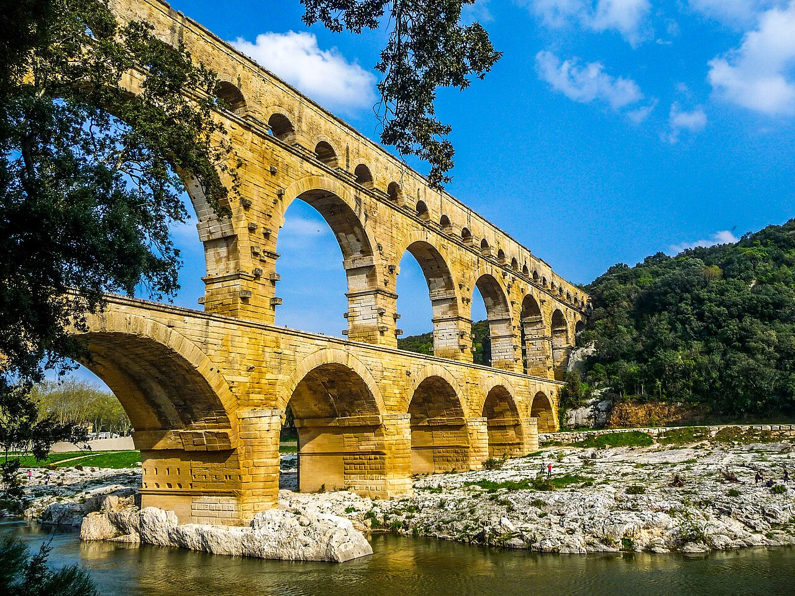
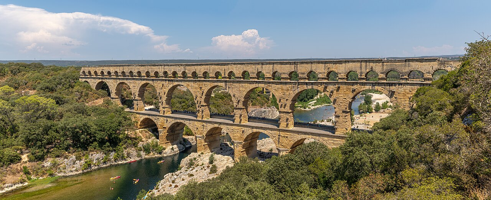
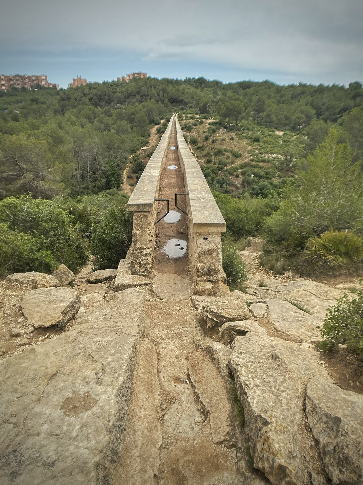
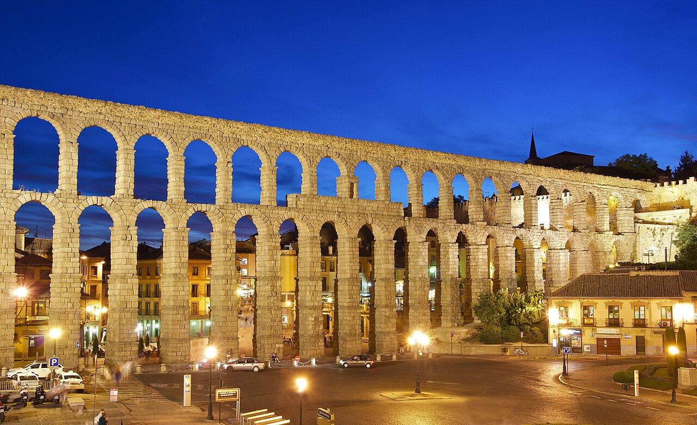
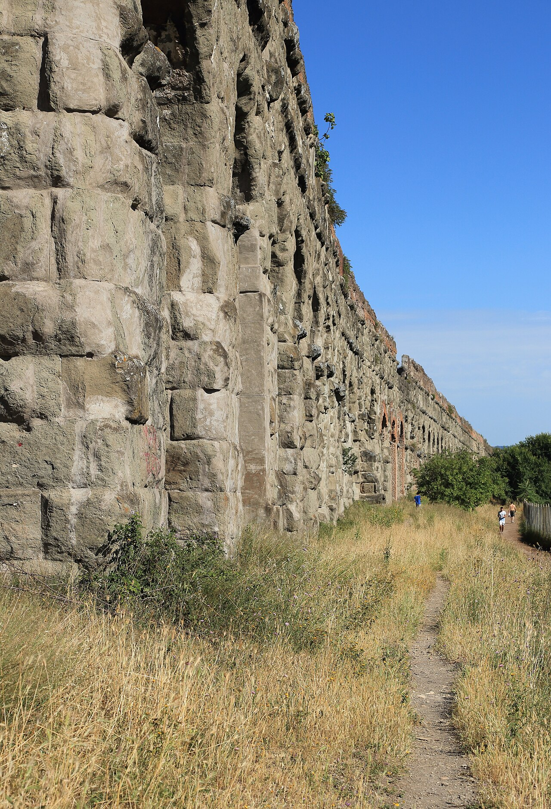
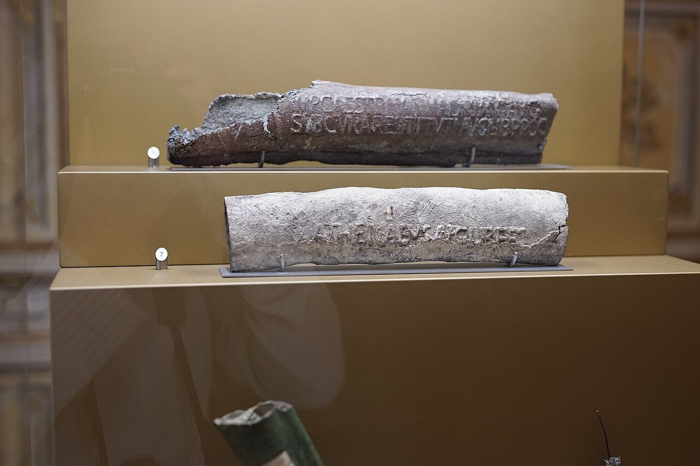
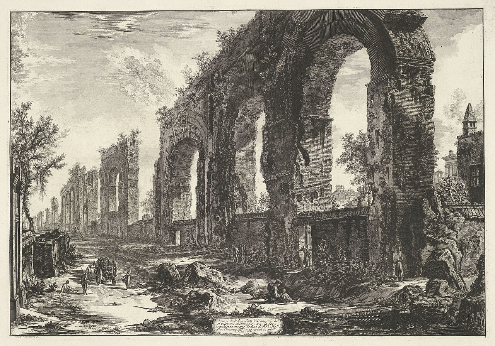

歴史・地理 History & Geography古代ローマ人は、どうやって水を街まで運んだ？
ポンプも電気もない古代、ローマの街には最も多いときで11本の水道があり、遠くの泉から毎日大量の水を運んでいました。カギは、ほんのわずかに下り続ける水路と、重力です。水道の道すじを横から見た図と写真で、のぞいてみませんか。
2026.10.22 UP 約5分で読める 文：SOMOSOMO編集部
写真：Pont du Gard／Pixabay ユーザー 2990108（2009年、CC0）
紀元前312年、ローマ。役人のアッピウス・クラウディウスの命令で、最初の水道「アッピア水道」がつくられました。水源の泉は、街から約16km離れた場所。そこから街までの高さの差は、わずか10mほどしかありませんでした。
その後、226年までにローマの水道は11本に増え、水路の長さは合わせて約800kmに達します。1日に運ばれた水は、推計で52万〜100万m³。100万人ほどともいわれる人々で割ると、1人あたり1日500〜1000リットルほどにもなります。ポンプも電気もない時代に、どうやってこれほどの水を運んだのでしょうか。
In a word
地形にそってほんの少しずつ下る 水路を何十kmも引き、重力だけ で水を流したから。
01
Gravity Only
動かす力は、重力だけ
ローマの水道の原理は、とてもシンプルです。水は、高いところから低いところへ流れる。だから水源の泉を街より高い場所に選び、そこから街まで、途切れなくゆるやかに下り続ける水路 をつくればいいのです。
難しいのは、その傾きです。急すぎると水の勢いで水路が傷み、ゆるすぎると水がよどみます。ローマの建築家ウィトルウィウスは、少なくとも4800分の1の傾きをつけるよう書き残したとされます（写本の読み方には諸説あります）。1km進んで約21cm下がる、という傾きです。
そんなわずかな傾きを、どうやって測ったのか。ウィトルウィウスは「コロバテス」という道具を書き残しています。長さ約6mの木の台の両はしにおもりの糸をたらし、台が水平かどうかを確かめるものです。風で糸がゆれる日は、台の上のみぞに水を注いで、水面で水平を見ました。
Fig.01 水源から街まで、ずっと下り坂
水源の泉
街
丘の下はトンネル
谷はアーチの橋で
深い谷は管で下って上がる
見どころは赤い線。途中で丘や谷があっても、水路は全体として少しずつ下がり続けます。深い谷だけは管でいったん下って上がりますが、出口は入り口より低い位置にあります。細かい点線は地下の水路とトンネル、長い破線は管です。傾きは実際よりずっと大きく描いた模式図です。
南フランスの都市ニームへ水を運んだ水道では、水源から街まで、まっすぐなら約20kmのところを、50km以上も遠回りしています。山や谷をよけ、ちょうどよい傾きを保てる道を選んだ結果です。全体で下がる高さは約17m。平均すると3000分の1、1kmで約33cmずつ下がる計算です。

谷をひとまたぎ、ポン・デュ・ガール ニームへの水道が、ガルドン川の谷をわたる橋。水路が通っているのは、いちばん上の段の小さなアーチの上です。高さは約49m、1世紀に建てられ、1985年に世界遺産に登録されました。写真：Pont du Gard, France ／Pierre Blaché（2022年、CC0）
02
Mostly Underground
目立つのはアーチ、でも水道のほとんどは地下
ローマの水道というと、壮大なアーチの橋を思い浮かべます。ところが、ローマ市の水道約800kmのうち、アーチなどの上を通るのは約47km、全体の約6%にすぎません。残りのほとんどは、地面のすぐ下を通る水路 でした。多くは地表から0.5〜1mほどの深さです。
アーチの橋は、低い土地や谷を越えて、水路の高さを保つための「つなぎ」でした。目立つ部分は、ほんの一部だったのです。
Fig.02 ローマ市の水道、約800kmの内訳
地下・地表 約94%
アーチなどの上 約6%（約47km）
見どころは2本の長さの差。写真でよく見るアーチは、水道全体のごく一部です。長さは推計です。

橋の上の「水の通り道」 スペイン・タラゴナ近くのレス・フェレーレス水道橋の上。石のみぞが水路で、ここを水が流れていました。写真：The specus of the Les Ferreres Aqueduct ／Stch2022（2024年、CC0）


2000年近くたっても、立っている 左はスペインのセゴビアの水道橋、右はローマ郊外に残るクラウディア水道のアーチです。写真：Aqueduct Segovia dusk ／Jebulon（2012年、CC0）、Aqua Claudia Rome ／Estormiz（2016年、CC0）
どうしても水路より低い深い谷では、別の方法も使われました。鉛などの管で谷底まで水を下ろし、反対側で上へ押し上げる「逆サイフォン」です。管の入り口が出口より高ければ、水は自分の重さで反対側へ上がっていきます。水を満たしたU字のホースで、片方の口を少し下げると、そこから水が流れ出るのと同じしくみです。ここでも、動かす力は重力だけでした。
03
Into the City
街に着いた水は、泉へ、浴場へ、家へ
街に着いた水は、まず池でごみや砂を沈め、それから「カステッルム」と呼ばれる分水のタンクに入ります。そこから管で、街角の水飲み場、公衆浴場、そしてお金を払った家などへ分けられました。
97年には、水道を管理する長官にフロンティヌスという人物が任命されています。彼が皇帝に向けて書いた報告には、それぞれの水道の水の量や質に加えて、困りごとも記されていました。農民や商人が水路にこっそり管をさしこみ、水を盗んでいたのです。フロンティヌスは水の出入りを測り直し、数字の合わないところを調べました。
Fig.03 泉から、街の蛇口まで
SOURCE 泉で集める 街より高い場所にある泉や川の水を取りこむ CHANNEL 水路を流れる 地下や橋の上を、ゆるやかに下りながら何十kmも進む SETTLE 池で沈める 水の流れをゆるめ、砂やごみを底に沈める SPLIT タンクで分ける 分水タンク（カステッルム）で、行き先ごとに分ける USE 街で使う 鉛などの管で、水飲み場、浴場、家へ届ける
見どころは「SPLIT」。ここで水を行き先ごとに分け、仕切り板などで流れる量を調節していました。


名前入りの水道管 左は2世紀の鉛の水道管で、皇帝や管理の役人、作った職人の名が刻まれています。こうした刻印は、水を盗まれないための工夫でもありました。右は18世紀にイタリアの版画家ピラネージが描いた、ローマの古い水道のアーチの跡です。写真：Condotti idrici di piombo ／Fabrizio Garrisi（2022年、CC0）、Avanzi degl'Aquedotti Neroniani ／ジョヴァンニ・バッティスタ・ピラネージ、アムステルダム国立美術館所蔵（18世紀、CC0）
04
By the Numbers
泉から街まで、水は約27時間の旅
約49m ポン・デュ・ガールの高さ。ビルのおよそ15階分1世紀の建設
約27時間 ニームへの水道で、水が水源から街に着くまでの時間1日に約4万m³を運んだと推計される
11本 3世紀までにローマ市へ水を引いた水道の数紀元前312年のアッピア水道から226年のアレクサンドリナ水道まで
Here's the Fun Part
ここが面白い！
ポン・デュ・ガールの橋の部分では、水路は長さ456mのあいだに、わずか2.5cmしか下がっていません。1m進んでも、下がるのは0.05mmほど 。コピー用紙1枚の厚さの半分くらいです。
水道全体では1kmで約33cm下がるのに、橋の上ではほとんど平らです。区間ごとに傾きを変えながら、全体として水が流れ続けるように道すじが決められていたことがわかります。レーザーもない時代に、コロバテスのような簡単な道具だけで、この精密さで何十kmもの道すじを決めていたのです。
2000年近く前のローマの人々が見上げた水道橋の上には、ほんのわずかな下り坂が続いていました。次に蛇口をひねったら、その水がどこから、どんな坂を下って来たのかを想像してみてください。
出典・参考
Roman aqueduct （Wikipedia 英語版）：紀元前312年のアッピア水道（水源まで16.4km、落差10m）、226年までに11本、合計780〜800km、地上の支えの上は約47km（約6%）、多くは地下0.5〜1m、ウィトルウィウスの最小勾配4800分の1、97年にフロンティヌスが水道長官、ウィトルウィウスのコロバテス、1日52万〜100万m³の推計、逆サイフォン、沈殿池と分水タンクPont du Gard （Wikipedia 英語版）：1世紀の建設、高さ48.8m、ニームへの水道は50km以上（直線では約20km）、落差17m、平均勾配3000分の1、橋の区間は456mで2.5cm、1日約4万m³、水源から約27時間、1985年に世界遺産Chorobates （Wikipedia 英語版）：ウィトルウィウスが記した長さ約6mの水準器、おもりの糸と水のみぞSextus Julius Frontinus （Wikipedia 英語版）：皇帝への報告、水道ごとの量と質、農民や商人による盗水、鉛管の刻印は盗水を防ぐためAqueduct of Segovia 、Aqua Claudia （Wikipedia 英語版）写真：すべて CC0。クレジットはそれぞれの写真の下に記しています